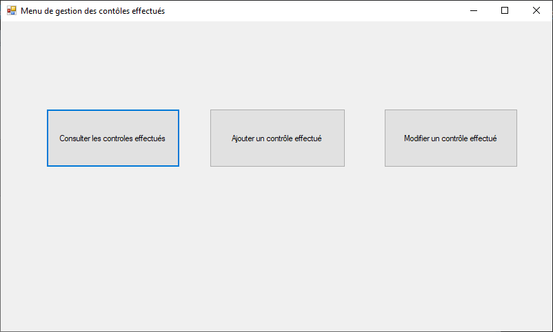
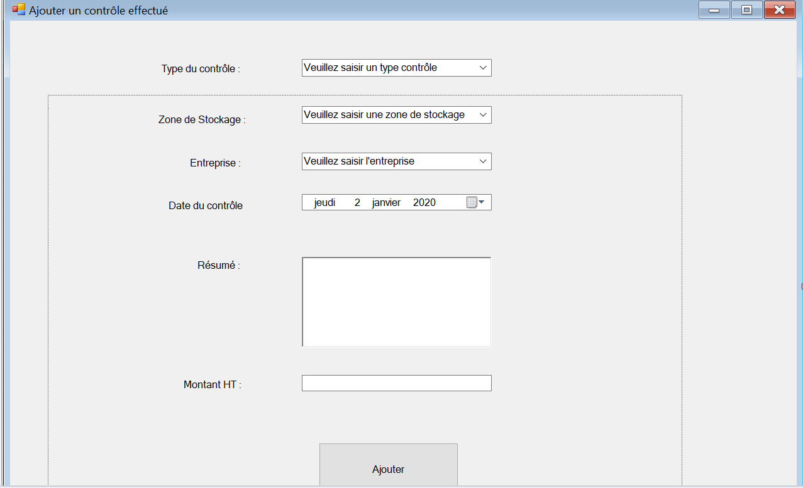
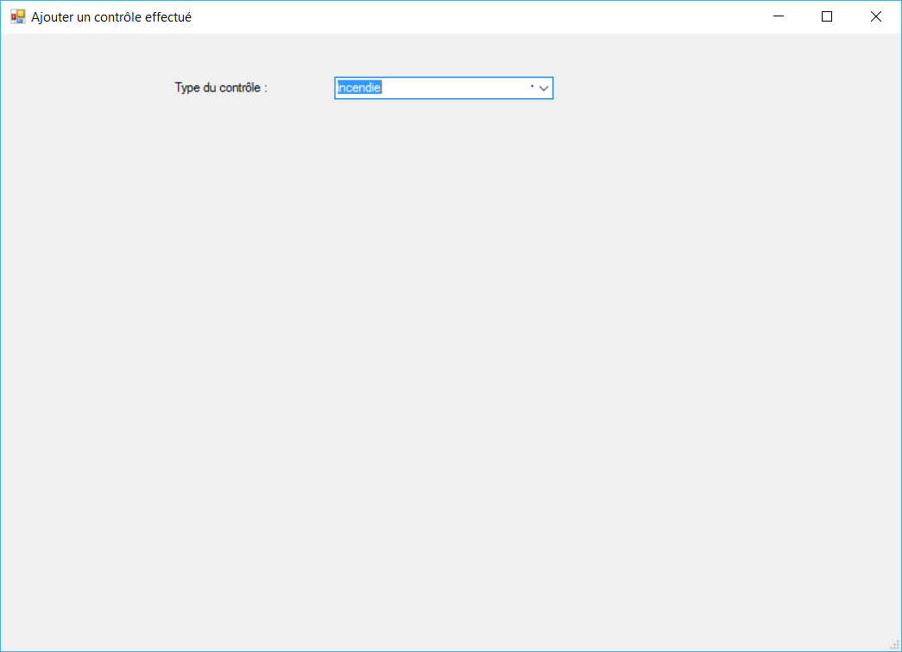
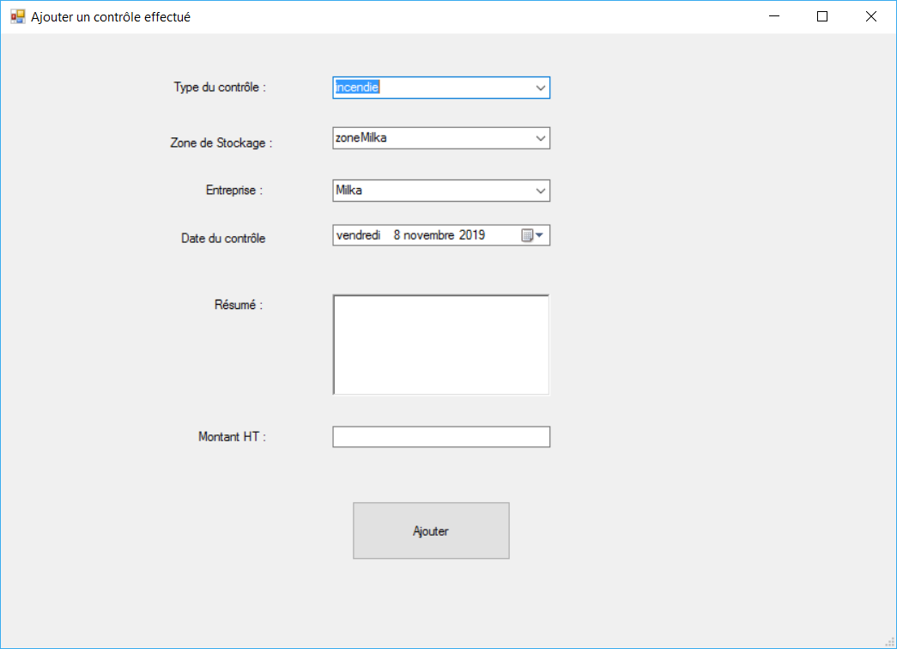
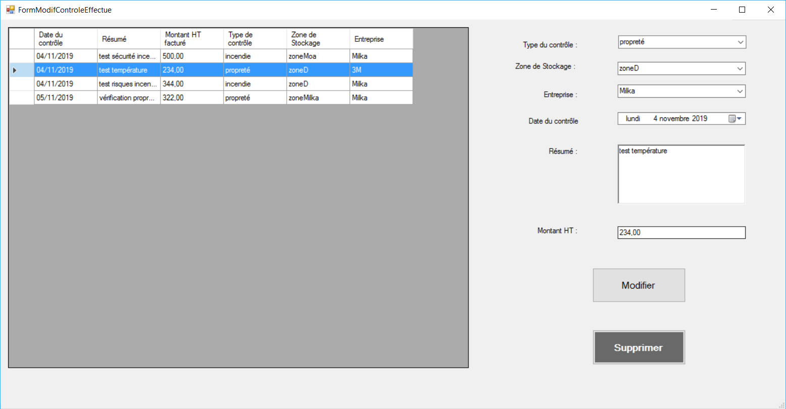
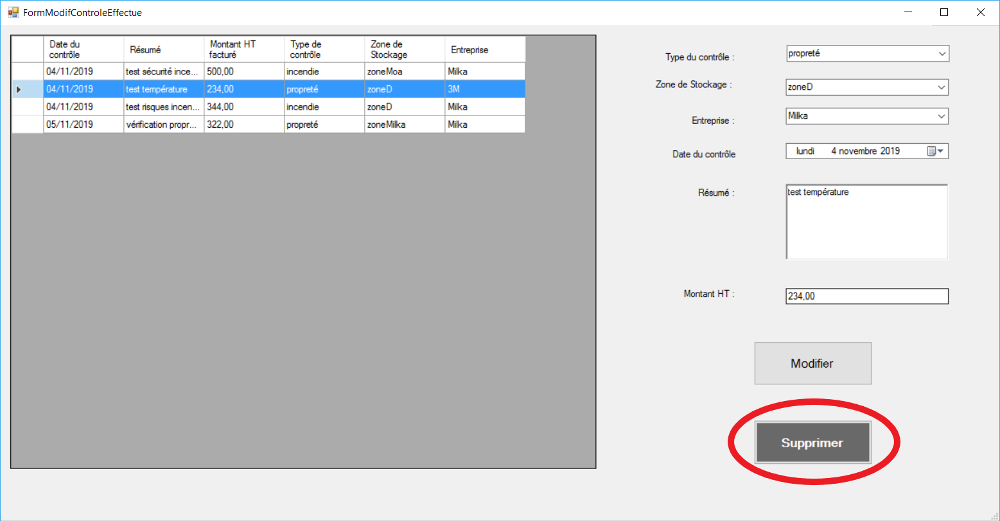

Application de gestion des zones de stockages
de GSB
I- Contexte
Description :
Le laboratoire Galaxy Swiss Bourdin (GSB) est issu de la fusion
entre le géant américain Galaxy (spécialisé dans le secteur des
maladies virales dont
le sida et les hépatites) et le conglomérat européen Swiss
Bourdin (travaillant sur des médicaments plus conventionnels),
lui-même déjà union de trois
petits laboratoires.
En 2009, les deux géants pharmaceutiques ont uni leurs forces
pour créer un leader de ce secteur industriel. L’entité Galaxy
Swiss Bourdin Europe a
établi son siège administratif à Paris.
Le siège social de la multinationale est situé à Philadelphie,
Pennsylvanie, aux Etats-Unis.
Le groupe GSB produit et distribue des médicaments dans de
nombreux pays.
Des contrôles sont effectués sur les zones de stockage afin de
permettre d’assurer :
La bonne conservation des substances et des médicaments
(l’humidité de l’air est par exemple un des facteurs de
dégradation des principes
actifs des médicaments, par ailleurs beaucoup de principes
actifs sont photosensibles et ne doivent pas être exposés
directement à la lumière
du jour)
La sécurité du personnel et des marchandises stockées.
La protection de l’environnement contre des accidents
(explosion, incendie, infiltration de produits dangereux
dans le sol …)
L’entreprise GSB dispose de plusieurs zones de stockages pour
entreposer les médicaments qu’elle fabrique et les substances
utilisées pour
les fabriquer (poudre, gaz…). Elle demande à des entreprises
spécialisées de réaliser régulièrement différents contrôles au
sein de ses
zones de stockage.
II- Présentation du PPE
1- Besoin
Actuellement, il n’existe aucun suivi des contrôles réalisés
dans les zones de stockage de GSB.
Il faut donc développer une application permettant
d’enregistrer les caractéristiques des zones de stockage et des
entreprises habilitées à les contrôler. La gestion des contrôles
réalisés doit également être prise en charge par l’application.
L’application Windows Dotnet à développer sera
accessible à toute personne (salarié et directeur) du service
Sécurité, au directeur du service Production et au directeur du
service financier pour le suivi des contrôles
L’accès ne sera possible que pour les acteurs
concernés et à partir d’un poste de l’entreprise GSB.
L’authentification préalable est nécessaire pour accéder à
l’application, les fonctionnalités proposées à l’utilisateur
dépendront de son rôle.
2- Contraintes
Architecture
L'application respectera l'architecture en couche (GUI, BL, DAL,
BO)
Chaque composant BL, DAL et BO sera une bibliothèque de
classe.
Ergonomie et charte graphique
Aucune charte graphique mais il doit y avoir une uniformité dans
les formulaires.
Codage
Vous devez utilisez les règles de bonnes pratiques de
développement utilisées au cours des
deux années de BTS pour encadrer le développement d’applications
en C# et en faciliter la maintenance.
Les éléments à fournir devront respecter le nommage des
fichiers, des classes, des variables, des paramètres, des
composants graphiques…
Chaque classe et méthode sera documentée. La qualité de la
documentation sera évaluée.
Environnement
Utilisation du framework Dotnet. Le langage à utiliser est le
C#.
Les données
La base de données sera gérée par le SGBD Sql Server.
La couche DAL ne contiendra pas de requête SQL mais fera appel à
des procédures stockées dans
la base de données. La gestion des erreurs sera prise en compte
dans les procédures stockées
(les erreurs retournées par la procédure stockée doivent être
enregistrées dans Sql Server)
Pour chaque enregistrement d’une table on conservera la date de
création de l’enregistrement
et la dernière date de mise à jour.
Pour chaque intervention sur les données d’une table (ajout,
modification, suppression),
il est nécessaire de garder la trace de l’intervention
(utilisateur responsable de l’intervention,
table concerné, opération réalisée, date et heure) dans une
table TraceIntervention.
Le nom de vos procédures stockées devra commencer pas sp et sera
suivi d’une expression significative.
Exemple : spInsClient est une procédure stockée qui permet
d’ajouter un enregistrement dans la table client,
spqCnsClientParNom est une procédure stockée qui permet de
consulter la table client par nom de client.
Le nom de vos triggers devra commencer par trg et sera suivi
d’une expression significative.
Documentation à rendre
Diagramme de cas d’utilisation
Un plan de test et un dossier de test pour chaque
fonctionnalité
Dossier technique de l’application (liste des bases de
données utiles, MCD des bases
de données, comptes applicatifs, description de
l’architecture applicative, liste et
description des composants (diagramme de classes), liens
entre composants, liste
des procédures et objectifs…)
Dossier de mise en production : script de création ou de
modification des bases de données,
comptes à créer, .exe à copier (nouveau ou à remplacer),
procédure de retour arrière, procédure
de test de vérification d’installation.
Vous livrerez un système opérationnel, une base de données
exemple avec un compte de test, la
documentation spécifique (C.F ci-dessus) permettant un transfert
de compétences et un mode
opératoire propre à chaque module.
Equipe : 5 personnes
Période : du 7 octobre 2019 au 6 novembre 2019
Langages :
Application Windows Form en C#
Framework .NET
SQL
Logiciels utilisés :
Visual Studio 2017
SQL Server Management Studio 2018
3- Description du domaine de gestion
Les zones de stockages
GSB dispose de plusieurs zones de stockages pour les produits.
Les informations caractérisant les zones de
stockage sont le nom de la zone, l’emplacement (bâtiment, étage,
adresse postale). Chaque zone de stockage
n’accueillera qu’une seule catégorie de produits. Il existe
plusieurs catégories de produit (exemples :
composés sanguins, stupéfiants, gaz…)
Voici un extrait de la liste des catégories de produits :
Médicament classe I (aérosol)>
Médicament classe II (solution buvable)
Médicament classe III (poudre)
Médicament classe IV (cachets)
Vaccin classe I
Vaccin classe II
Vaccin classe III
Gaz médical
Composés sanguins
Produits radiopharmaceutiques
Stupéfiants
Poudre pour solution type A
Poudre pour solution type B
Poudre pour solution type C
Les types de contrôles et les contrôles
Il existe plusieurs types de contrôles (de poids, d’humidité, de
pression, de luminosité, de
température, de propreté, de sécurité, d’incendie…)
Chaque zone de stockage peut subir plusieurs types de contrôles.
Par exemple la zone de
stockage située au 4ème étage du bâtiment 1 sise 6 rue des
cordeliers à Rougemont doit subir
des contrôles d’humidité (celle-ci doit être inférieur à 30%) ;
de sécurité (les
fenêtres doivent être protégées et les serrures très solides car
des produits stupéfiants
sont stockés dans cette zone) et d’incendie (état des
extincteurs)
Il est donc nécessaire d’enregistrer pour chaque zone de
stockage les types de contrôles à
réaliser : s’il y a lieu un commentaire pourra être indiqué pour
préciser le détail des
contrôles à réaliser (exemple : humidité inférieure à 30%).
GSB demande régulièrement à des entreprises spécialisées de
contrôler ses zones de stockage. Pour
chaque contrôle réalisé on enregistrera la zone de stockage
concernée, la date du contrôle, un résumé du résultat
du contrôle réalisé, le type de contrôle réalisé et le montant
HT facturé pour le contrôle.
Les entreprises de contrôle
Pour chaque entreprise qui réalise un contrôle au sein de GSB il
est nécessaire de connaitre son nom,
son adresse postale et son adresse mail afin de pouvoir la
contacter. GSB souhaite enregistrer également les
types de contrôles pour lesquels elle est habilitée.
Le schéma de la base de données et le MCD sont simplifiés. Pour
des raisons de lisibilité
toutes les associations avec l'entité utilisateur n'apparaissent
pas. Dans la base de
données chaque table contient les champs idUtilisateurCreat et
idUtilisateurModif clés
étrangères sur la table Utilisateur, ce qui sur le MCD
représenterait deux associations
liées à l'entité Utilisateur.
La gestion des contrôles effectués se fait à l’aide du menu de
gestion des contrôles effectués.
Le bouton « Consulter les contrôles effectués » permet la
consultation de tous les contrôles qui ont été réalisés
et qui sont enregistrés dans la base de données. Le bouton « Ajouter
un contrôle effectué » permet de saisir un
contrôle qui a été réalisé. Le bouton « Modifier un contrôle
effectué » permet de modifier les informations d’un contrôle.

1- Consultation des contrôles effectués
La consultation de tous les contrôles ayant été réalisés doit être
possible.
Les données à afficher sont :
Les contrôles ayant été effectués doivent pouvoir être ajoutés à
partir de l’application.
Le formulaire d'ajout devra contenir :
une liste déroulante avec tous les types de contrôles possibles
une liste déroulante avec toutes les zones de stockage
une liste avec toutes les entreprises
un dateTimePicker permettant de choisir une date de contrôle
une richTextBox pour la saisie du résumé du contrôle
une textBox pour la saisie du montant hors taxe facturé
un bouton de validation
J’ai également ajouté un panel qui englobe tous les éléments sauf la
liste
déroulante des types de contrôle, de cette façon l’utilisateur
choisi le type
de contrôle puis les entreprises sont affiché en fonction du type de
contrôle.
En effet, une entreprise ne réalise que certain type de contrôles il
ne faut
donc afficher que les entreprises qui réalisent le contrôle
sélectionné. Par
exemple une entreprise peut être habilité à réaliser des contrôles
d’humidité
et de sécurité mais pas des contrôles de pression.

Capture d'écran du formulaire d'ajout
Lorsque l'utilisateur utilise l'application, seule la liste
déroulante des types de
contôles est visible.

Capture d'écran du formulaire d'ajout à son
lancement
Puis lorsqu'il a sélectionné un type de contrôle les autres champs
sont visibles :

Capture d'écran du formulaire d'ajout après
sélection du type de contrôle
Au moment de la validation, on vérifie les informations saisies, on
affiche alors un message
d'erreur en cas de problème. Si les informations saisies sont
correcte, on rélaise l'insert puis on affiche un message
d'information à l'utilisateur.
3- Modification d'un contrôle effectué
Les utilisateurs doivent également pouvoir modifier un contrôle à
partir de
l’application. Pour cela j’ai réalisé le formulaire ci-dessous qui
est composé
d’un dataGridView avec les informations de tous les contrôle comme
pour la
consultation et d’un formulaire de modification. Lorsque
l’utilisateur
sélectionne un contrôle dans le tableau le formulaire à droite est
pré-remplis
avec les informations du contrôle sélectionné. Ici le contrôle
sélectionné est
celui surligné en bleu, ses informations s'affichent dans le
formulaire à droite.

Capture d'écran du formulaire de modification après
sélection d'un contrôle
4- Suppression d'un contrôle effectué
Les informations d’un contrôle doivent pouvoir être supprimées à
partir de l’application.
Pour cela j’ai mis la fonctionnalité de suppression sur la page de
modification. L’utilisateur
sélectionne le contrôle dans le tableau et clique sur le bouton «
Supprimer ».

Capture d'écran du formulaire de modification après
sélection d'un contrôle pour suppression